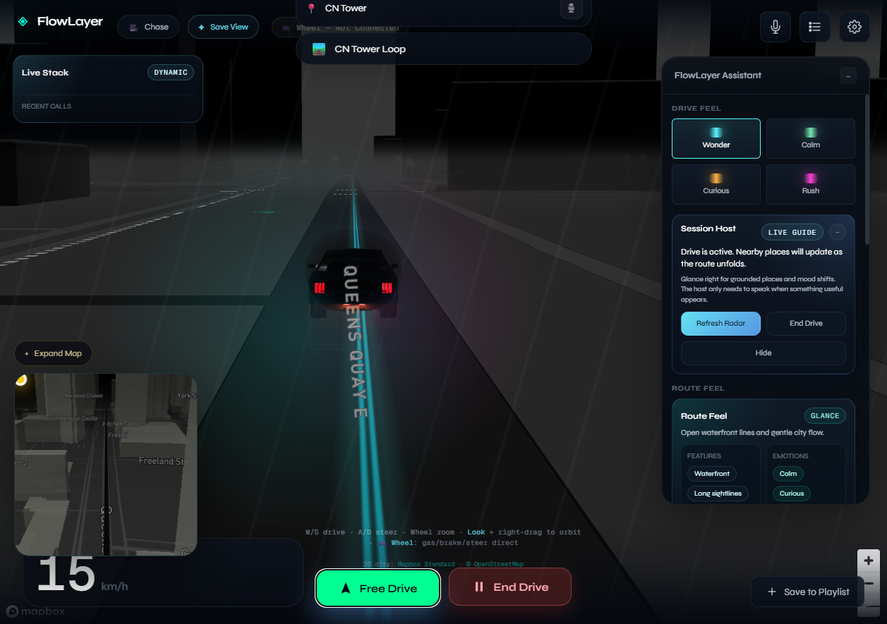
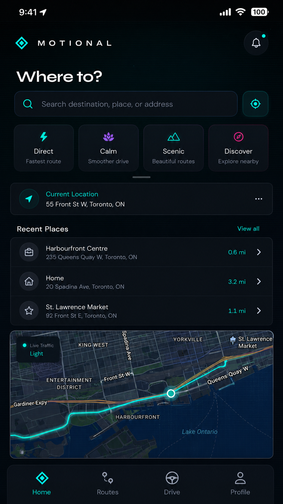
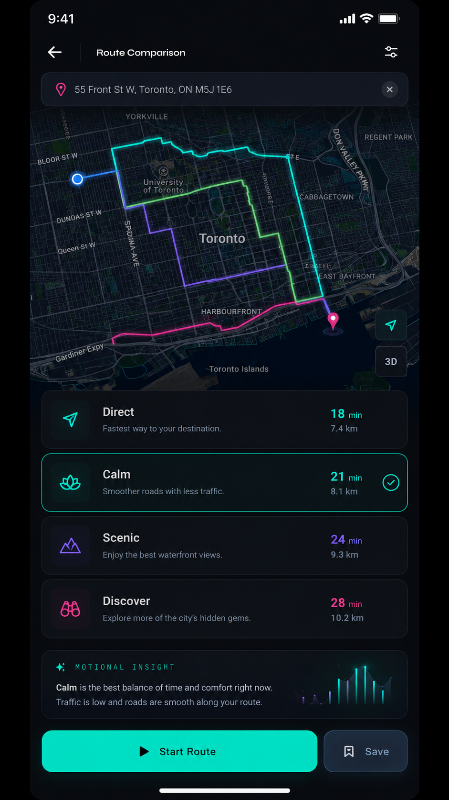
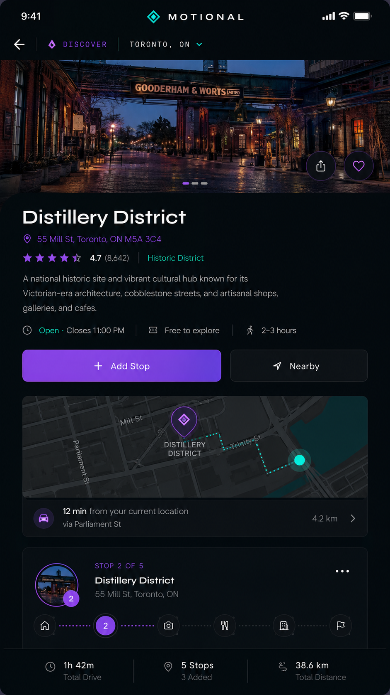
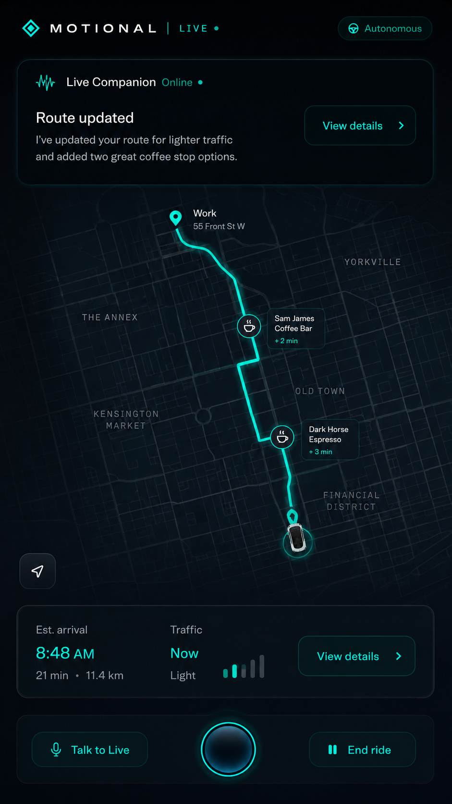
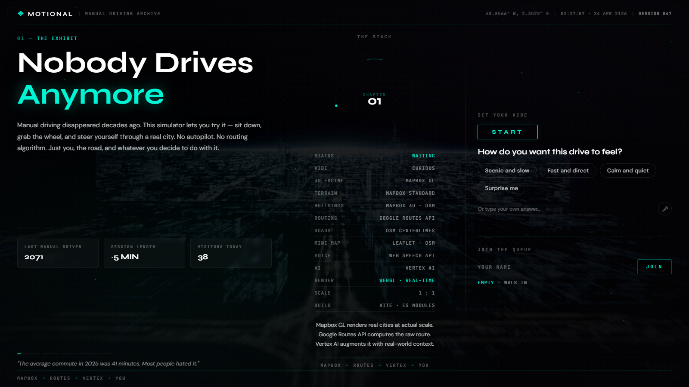
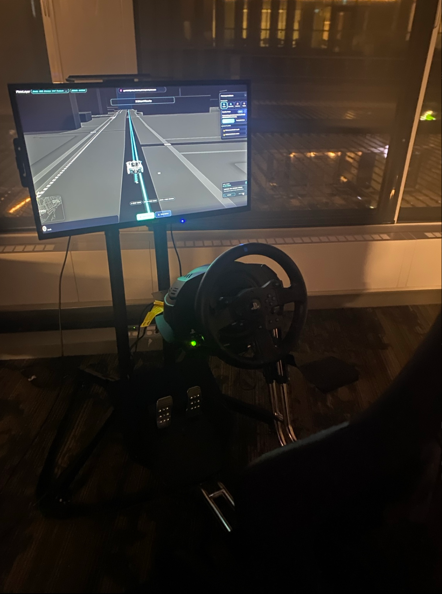
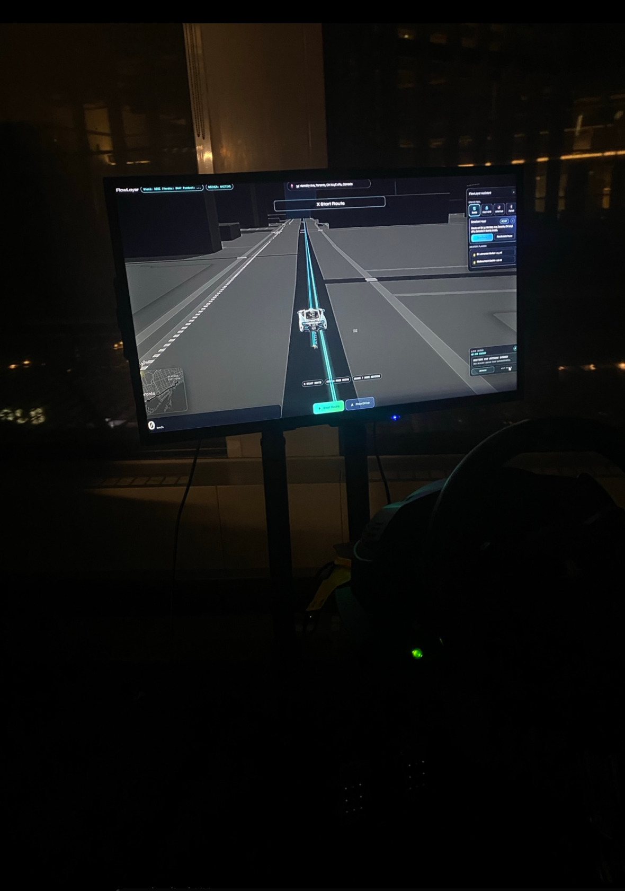
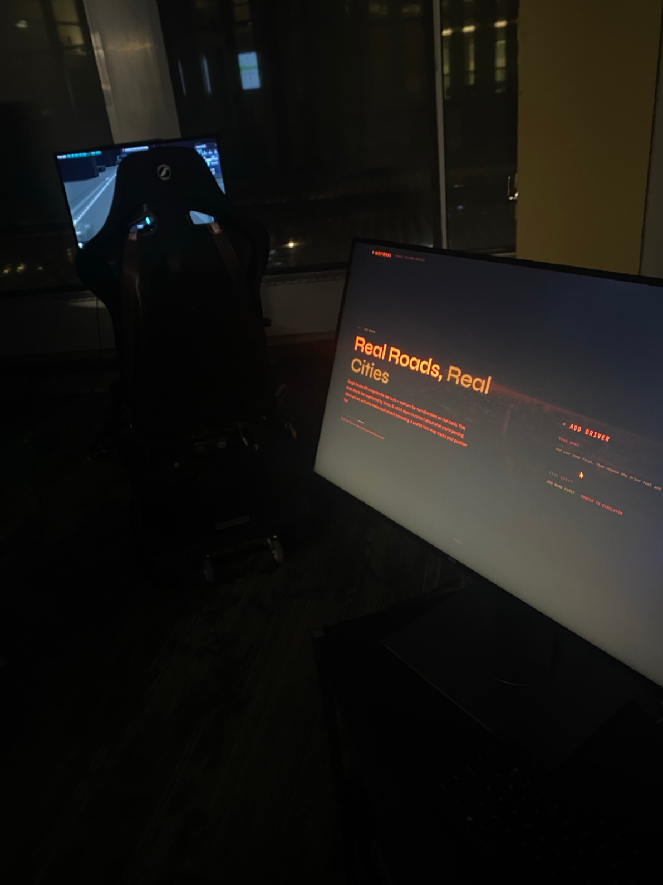

A mobile app where a person chooses Direct, Calm, Scenic, or Discover instead of only accepting the fastest ETA.
01 - Project Thesis
Motional
AI as a partner for new human experiences.
Motional is not just a route app. It is a project about using AI to create novel interactions between people, cities, and machines. I started with an intent-based mobile routing concept, then built a future driving simulator where visitors could feel the idea with a wheel, pedals, a screen, and an AI-guided route.

The app became a future installation where people who grew up with automation try driving manually for the first time.
The assistant explains why a route fits the driver's mood, what changed, and what the city is offering along the way.
I used Codex as a coding partner to build the UI, session handoff, simulator controls, visual system, and final production polish.
02 - Why It Exists
The simulator turns an AI idea into an embodied interaction.
The point was not to automate the user away. The point was to let AI support a richer human decision: how do you want this journey to feel?
Mobile product thesis
Most navigation products optimize around time. Motional adds another layer: intent. It asks whether the user wants calm, speed, discovery, or scenery, then makes route tradeoffs visible instead of hiding them behind a single blue line.
Installation thesis
The simulator makes the interaction physical. A visitor gives the system a name, destination, and vibe on the onboarding screen. Inside, the wheel and pedals turn those choices into a route they can actually perform.
03 - Product Interface
The app explored AI routing as a consumer product.




04 - Wireframes
From route app to installation flow.
Like Locavore, this needed structure before polish. The wireframes focused on what each screen had to decide, not just what it looked like.
01Intent
Pick how the route should feel.
02Context
Explain route differences clearly.
03Handoff
Send name, vibe, and destination to the simulator.
04Drive
Keep guidance visible without taking control.
Mobile route setup
Destination search, route intent, recent places, and a map preview live on one screen.
Route comparison
The user sees time, distance, stress, and experience tradeoffs before starting.
Onboarding screen handoff
Name, destination, and vibe choices become a shared session the simulator can read live.
05 - Prototype
The prototype became a live two-screen system.

Onboarding screen
Public intake and queue
Visitors enter name, destination, and vibe before moving to the wheel.
Simulator
Driving surface
The route, car, wheel input, speed, and assistant become the embodied part of the demo.
Mobile prototype
Original app behavior
The mobile product language still drives the simulator: intent, places, routes, and stops.
06 - Stack
The stack was built around context, not chat.
Input layer
Onboarding screen captures name, destination, and reflective vibe answers.
Route layer
Google Routes style logic and map geometry create the baseline journey.
Context layer
Gemini and maps-grounding experiments shaped place-aware guidance and route language.
Build layer
Codex helped rapidly implement, debug, tune, and deploy the working interaction.
Real city surface
Toronto roads, buildings, route lines, minimap context, and a stylized night-driving interface gave the AI interaction a real place to act on.
Grounded route choices
The project used route logic, destinations, nearby places, and map-grounded explanations as the input material for the AI guide.
Agent as route host
Voice and live-agent ideas were tested, then the public demo shipped with reliable text guidance that still uses structured context.
AI as build partner
I used Codex to inspect code, generate UI, wire APIs, debug wheel input, tune camera feel, iterate from screenshots, and push deploys under time pressure.
07 - How I Used Codex
Codex was part of the creative process, not just autocomplete.
Explored interaction options fast
I used Codex to turn rough ideas into working UI experiments: route vibes, traffic signals, camera angles, route ribbons, onboarding handoff, and assistant panels.
Debugged across hardware and software
The project involved a Thrustmaster wheel, pedals, browser APIs, Mapbox rendering, Vercel routes, and local Windows setup. Codex helped trace each layer instead of treating the product as only a webpage.
Made reliability decisions
When live voice became risky for presentation, I used Codex to remove it from the main path and replace it with grounded AI route text that could actually ship.
08 - Physical Demo
The AI interaction was tested with an actual wheel and exhibit screen.



09 - Visual System
The interface language came from the onboarding screen: dark, precise, cinematic.
10 - What This Shows
A strong AI project is a full interaction, not a prompt demo.
The project asks what AI can do when it becomes part of a physical experience: guiding, contextualizing, and adapting without removing the human from the action.
The assistant had to know when to speak, what context to use, how to stay grounded, and when reliability mattered more than novelty.
Motional combines product concepting, visual design, code, APIs, AI workflow, hardware debugging, deployment, and presentation storytelling.